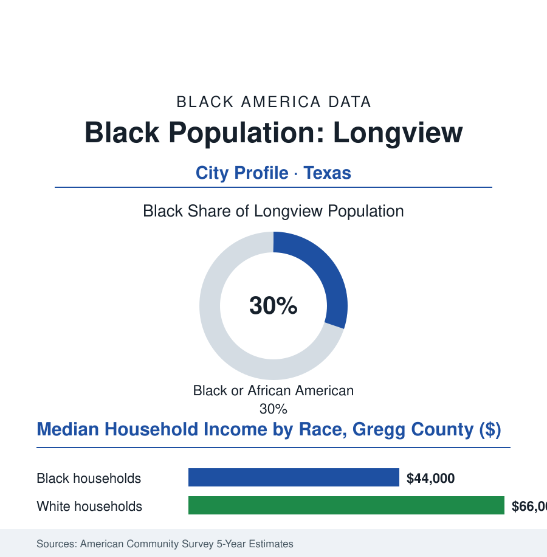

Black Cities
Black Longview: 24,000 People in the Piney Woods' Other Boomtown
Longview's Black community — nearly a third of the East Texas city — shares the oil patch's history and carries a 1970 school fight the whole country watched. The numbers.

Longview's Black community numbers roughly 24,000 people — about 30% of the city's 82,000 residents — in the East Texas railroad-and-oil city forty miles from Tyler, its sister and its mirror: same piney woods, same oilfield century, its own harder school history. This article reads Longview's numbers.
Oil, Rail, and the South Side
Longview was a railroad town before it was an oil town — the junction the rails made in the 1870s, the cotton country's shipping point — and the Black community formed in the standard Texas pattern: the labor of both industries, the churches and the schools of the south side, the business strip whose history the community's elders keep. The oil changed the scale without changing the map: the East Texas field's western edge ran through Gregg County, the boom's wages drawing the workforce the postwar city was built on (the pipeline and machine-shop economy that followed the field's discovery making Longview an industrial town of a durability the pure boomtowns never achieved), the Black oilfield and shop workers' wages building the south side's postwar subdivisions in the decades when the credit file allowed. The era's defining public chapter is in the national education record: Longview's school desegregation fight of 1970 — the busing order, the white flight academies, the violence-threatened opening that drew the country's cameras to Gregg County — among the last and most watched of the southern school battles, its resolution (a genuinely integrated system, built under the court's eye across the decade) leaving the city's schools, in the modern data, among the region's more integrated — a legacy the alumni of both systems recount, in the oral histories, as the wound that taught the town its modern manners. LeTourneau University — the industrialist-founded Christian school whose engineering programs grew from the wartime factories on its site — anchors the education rows beside the community college's Kilgore pipeline, the two schools' Black enrollments bookending the local ladder.
The Industrial City's Balance
The faith and funeral rows carry the continuity as they do in every Texas town of this file: the south side's churches — several past their centennials — as the community's archive and assembly, their homecoming calendars drawing the diaspora back from Dallas and Houston each year; the Black funeral home on the old business strip still burying the fourth generation of the families it was founded to serve. In the civic data these institutions barely register. In the community's own accounting they are the city's load-bearing walls, and the census of attendance on a homecoming Sunday would out-poll most of the official numbers in this profile.
The modern data describe East Texas's steadiest small industrial city: the manufacturing and energy-services base holding employment where the pure-oil towns whipsawed, the medical center drawing the region, the household rows in the county survey cuts in the pattern this file has learned to expect (the Black median in the mid forty-thousands, the county's white median in the mid sixty-thousands, the gap's ratio stubborn across the energy cycles), the poverty concentrated in the south side's aging stock beside the growth of the northern suburbs — the city's expansion, as in Tyler, running away from the community whose labor built its industries. The forward files are the energy transition's local chapter: the field's second life in the shale era's service economy, the manufacturing recruiters' East Texas circuit, the logistics of the interstate corridor, the retention of the schools' graduates (the out-migration rows of the East Texas file running, in the recent data, a little slower here than in the region's pure-extraction towns — the diversified base holding its young at measurably better rates). The demographic rows show the Texas pattern in miniature: the Black share steady at three-in-ten, the Hispanic share climbing, the schools majority-minority — the city the cameras found in 1970 having become, in the census's quiet annual handwriting, a place whose future is being raised, in the main, by the children of the families it once bussed under guard. The file finds that ending worth the data's time.
Reading Longview's Numbers
Twenty-four thousand people, thirty percent, one junction city: Longview is the cities file's perseverance chapter — the town that fought its school war on national television and then, decade by decade, simply went on integrating its future. The census counts the residents. The Class of the integrated schools — now grandparents — counts the victory, in the alumni rolls of both colors.
More in Black Cities
Black Atlanta: Population, Distribution, and Growth of a Black Metropolis
Metro Atlanta holds more than two million Black residents — roughly one in three, second only to New York. The suburban distribution, migration history, and composition of Black Atlanta in the census data.
Black New York: The Largest Black Population in America
The New York metropolitan area holds about 3.4 million Black residents — more than any metro in the nation — and the city itself about two million. The census profile.
Black Washington: The District and the Metro
The Washington metro holds about 1.6 million Black residents, and the District itself — long a majority-Black city — now records a Black share near 41 percent. The census profile.
Source: U.S. Census Bureau, 2020 Census and American Community Survey 5-year estimates; City of Longview and Gregg County records; LeTourneau University data.